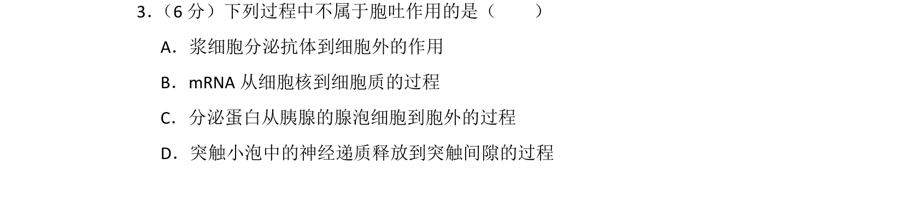
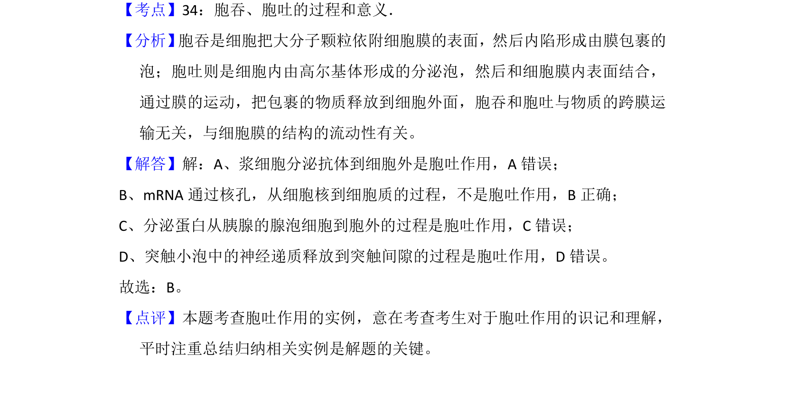

考点：胞吞 胞吐 物质运输

本题考查胞吐作用的实例辨析及物质运输方式判断

📄 原 PDF 第 3 页：
素材/真题/吉林/2008-2024·（吉林）生物高考真题/2015年高考生物试卷（新课标Ⅱ）（解析卷）.pdf
3． （6分）下列过程中不属于胞吐作用的是（ ） A．浆细胞分泌抗体到细胞外的作用 B．mRNA从细胞核到细胞质的过程 C．分泌蛋白从胰腺的腺泡细胞到胞外的过程 D．突触小泡中的神经递质释放到突触间隙的过程
【考点】34：胞吞、胞吐的过程和意义．菁优网版权所有 【分析】 胞吞是细胞把大分子颗粒依附细胞膜的表面，然后内陷形成由膜包裹的 泡；胞吐则是细胞内由高尔基体形成的分泌泡，然后和细胞膜内表面结合， 通过膜的运动，把包裹的物质释放到细胞外面，胞吞和胞吐与物质的跨膜运 输无关，与细胞膜的结构的流动性有关。 【解答】解：A、浆细胞分泌抗体到细胞外是胞吐作用，A错误； B、mRNA通过核孔，从细胞核到细胞质的过程，不是胞吐作用，B正确； C、分泌蛋白从胰腺的腺泡细胞到胞外的过程是胞吐作用，C错误； D、突触小泡中的神经递质释放到突触间隙的过程是胞吐作用，D错误。 故选：B。 【点评】本题考查胞吐作用的实例，意在考查考生对于胞吐作用的识记和理解， 平时注重总结归纳相关实例是解题的关键。